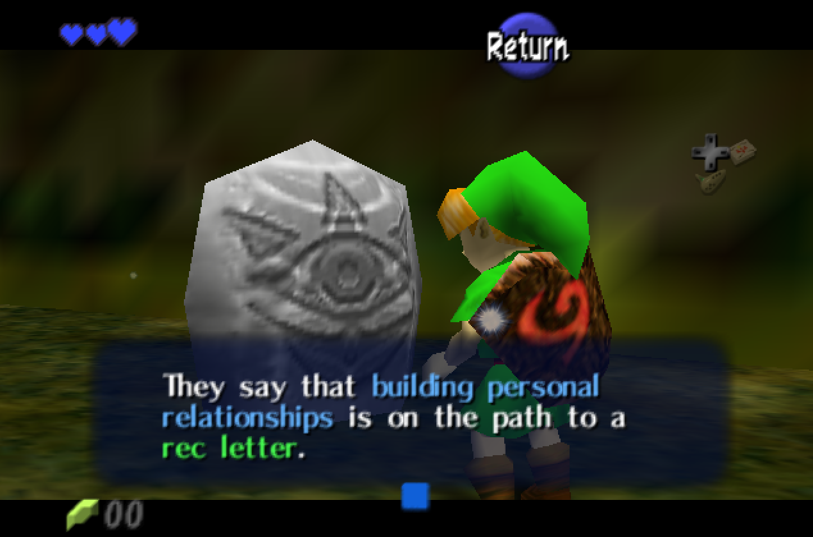

Rec Letters
Letters of recommendation are a crucial part of your academic and professional journey. They provide insight into your intellectual curiosity, work ethic, and potential that extend well beyond the grades on your transcript. In my experience, a strong recommendation is built on a foundation of genuine engagement and personal connection. While a good grade in one of my courses is a piece of this puzzle, I cannot write a strong letter on the basis of your grade alone, and this is already covered in your application through transcripts regardless.
Building a Relationship
While I do my best to make my courses active and more personal, the reality is that even if you take my course and you participate in your groups or in full class discussions, I won't have the basis to write a personal recommendation letter for you, and may not even know your name if I see you out on campus. Students who receive strong letters from me have likely done one (or more!) of the following:
- Frequently visited drop-in hours - Coming to drop-in hours will allow you to build a relationship with me that puts us on a first-name basis. You don't have to come to drop-in hours to discuss coursework, it could be to discuss future classes, research interests (especially if you're interested in education research!), or plans after college. It's an easy way to put a name to a face for me and discussions like these allow me to get a better sense of your personal qualities. If you can't make my personal drop-in hour, I am always open for appointments, and I'm likely to be around when other CAs are hosting drop-in hours too!
- Frequently discussed course topics with me after class - Many students who got strong letters of rec from me might not be able to visit my drop-in hours, but made a habit out of discussing class activities or assignments with me after class.
- Worked with me as a CA - Not everyone can be a CA for my course, but if you are, we've likely built a strong personal relationship where I get to see your work ethic, creativity, and professionalism.
- Worked on a research project with me - Similar to being a CA, working on a research project with me will give me a basis to evaulate your personal traits that I can write about in a letter.
If I were to accept a request from a student that did not pursue one of the above avenues, the letter would have to look something like this. This is not a good letter of recommendation, and I don't plan to submit that on anyone's behalf. It doesn't mean you are a bad student, it just means I don't have the proper background to write anything more about you.
Requesting a Letter
If you believe you are a strong candidate for a letter of recommendation based on the criteria above, please consider the following steps to request a letter:
- Reach out to me via email at least 4 weeks before your first deadline, and write the email yourself (it's obvious when you use ChatGPT). I will not write a letter on shorter notice. You must indicate in your email that you have read this page on my website.
- If I've agreed to write you a letter, please create a Google Drive folder entitled "Your Name Recommendations" (e.g. "Cade Smith Recommendations") which has the following:
- A Google Sheet with a row for each program you are applying to. It should have the following columns:
- Program name
- A link to the program info page
- Submission deadline
- Submission process (e.g. direct email, link given, link automatically sent via email, someone from program will contact me, etc.)
- Submission link (if needed)
- A checkbox column so I can check off when I've submitted the letter
- Your current CV/resume.
- Your current transcript.
- A Google Doc that includes your name as it will appear on the application, pronouns, and anything I should know about what you have done with me that I should include in the letter. Important: I will not speak to what I have not personally observed, but this is your chance to make sure I highlight relevant experiences on your letter!
- Any additional materials (essays, personal statements) that you are using to apply to the programs.
- Share this Google Drive folder with me, and then send me an email when you have completed uploading all of the materials above in the folder.
- You must have this Google Drive folder completed within 3 weeks of the first deadline.
Letter process adapted from Jessica Sidman's and Audrey St. John's personal webpage. Thanks for the guidance you gave to a young, naive undergraduate REU student years ago!